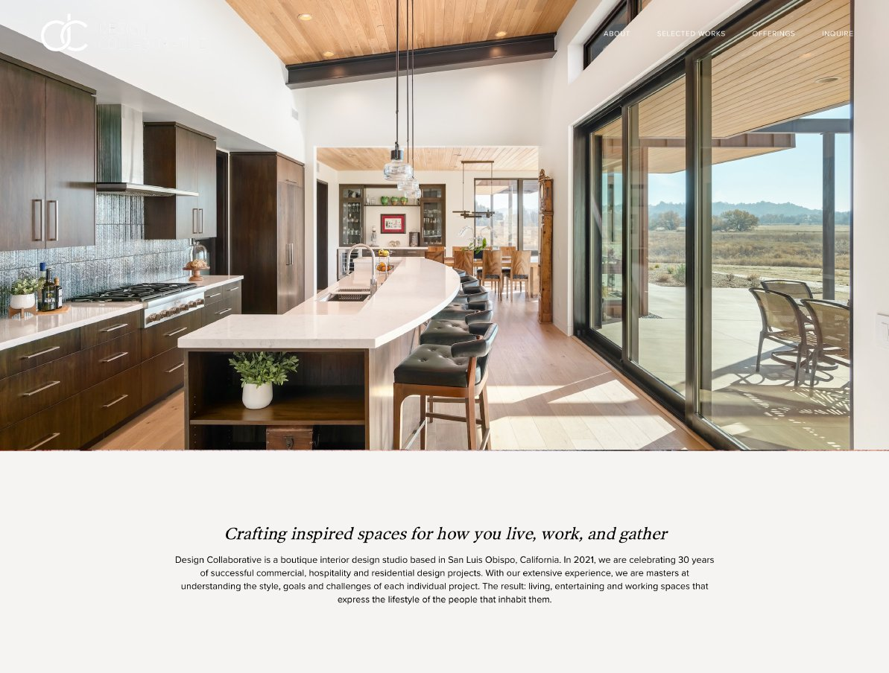
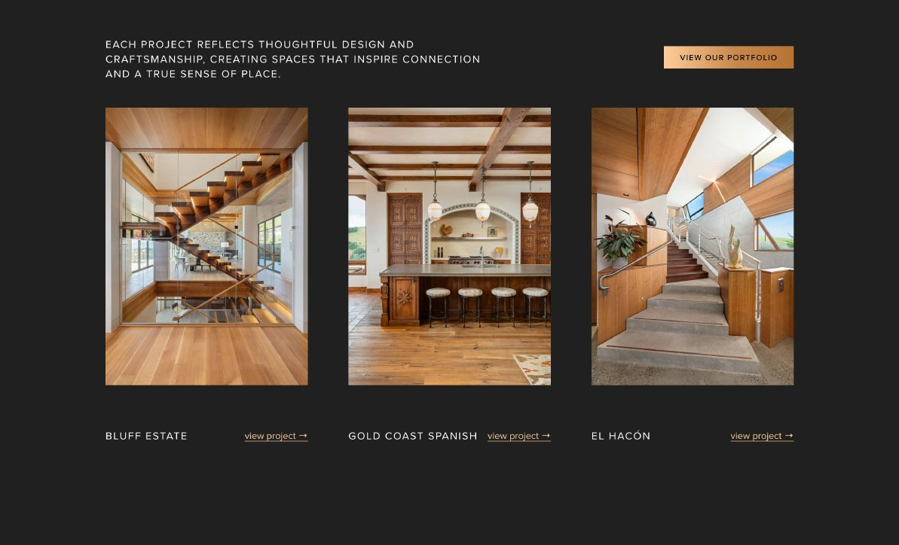

sage
Case study · Getting found on Google
79to11
A Minneapolis designer went from page eight of Google to one spot from page one.
Heather Peterson DesignMinneapolis, MNNine months
Heather Peterson Design
Before and after.
March 2024Dec 2024
Her spot on GoogleWhen someone searches “interior design Minneapolis”
#79#11
Visitors from GoogleEach month
94217
Design searches she shows up inSearches that lead to clients
1225
What changed
- Her website was tuned behind the scenes so Google understands what she does and where.
- Old blog posts that attracted the wrong visitors were cleaned up.
- Her best blog posts, the ones people already loved, stayed.
Full transparency
The SEO strategy behind these results came from our strategy team. The website work on this project wasn’t done by Sage, but it’s the same process we carry out for our clients: the strategy team builds the plan, and Sage does the work on your website.
Numbers from Google Search Console and Semrush, from the December 2024 SEO check-in.
Website design by Sage
A site that looks like the work.
Design Collaborative · San Luis Obispo, CA and Eagle, ID
designcollaborative.design

Selected works

Be found. Then be remembered.
Book a discovery call and we’ll show you where your site stands today.
SAGEINTERIORDESIGNMARKETING.COM